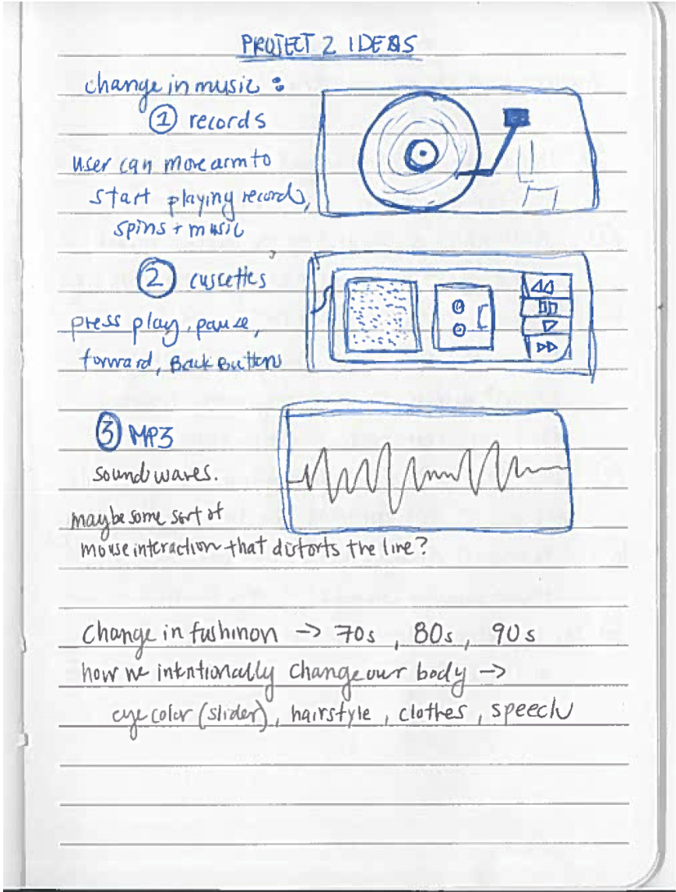

How We Listen to Music
visit How We Listen to MusicThis series features three interactive sketches built using p5.js. How We Listen to Music explores the change in devices we've used to listen to music. Before we gained the ability to record and playback sound, in order for music to be heard, it had to be heard live. Then, the first devices for playing back sound allowed people to listen to any music they wished as they pleased. But, the early equipment for listening to music was large and cumbersome. That brings us to modern day, where MP3 has allowed us to store thousands upon thousands of songs on handheld machines, giving us the ability to listen to music more freely that ever before. The way we listen to music has drastically changed in a short period of time. This series of sketches attempts to recreate these vastly different experiences all within a digital interface with user interactions.

homepage

record player section

guitar section

mp3 visualizer section
PROCESS
The sketch below shows the preliminary idea for the sletches and how they would flow in order. In the end, I chose to omit cassettes and add in live music, represented by the guitar sketch, in order to stretch the timeline further and include non-recorded music.

brainstorming sketches
website draft


code for p5.js sketches